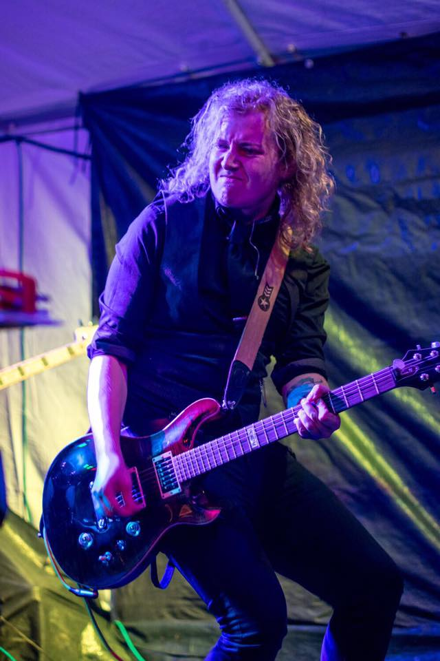

Oliver “Foz” Ward
Guitarist
Born: Scunthorpe
Year: 1993
I got given my first guitar for Christmas when I was 8 years old which instantly gave me my spark for music. Shortly after this I had lessons to learn guitar, and from there the rest is self taught.
I spent a lot of my youth attending a local centre for jam sessions and even forming my first band. My journey in Suburban Blues started as a bass player, which was a thrill and a challenge to learn a new instrument. Due to a line up change, this has meant that I have been able to change my role within the band and follow my true passion with a six string.
My main influences are rock and metal, and Slash was my first guitarist idol, however I have a wide range of music taste.
This has impacted my adult life as I am now a full time guitar teacher with an extensive collection of guitars and a whole room dedicated to them.
Rachel Cooksey
Lead Vocalist
Born: York
Year: 1994
I have always had a passion for music since being a child, especially for singing. I have grown up performing to family and participating in choirs and concerts at school and in the North Lincolnshire area.
Mr first influences consist of Eva Cassidy, Nina Simone, Franky Valley and the four seasons to The Eagles, ACDC and Iron Maiden. All thanks to my parents influences. However as I have grown older I have adopted a love for a variety of genres and artists and couldn’t pin down a specific favourite.
My musical journey started when I was 10 and learned to play the cello, since then I have tried my hand at Double Bass, Piano, Guitar and most recently the saxophone.
I started as a gigging musician as a solo acoustic artist and performed my first gig when I was 15 in a local talent show. Since then I have never looked back and then moved on to be a member of 2 bands and 2 duos, before forming Suburban Blues in 2015.
Dom Brown
Guitarist & Backing vocals
Born: Scunthorpe
Year: 1995
“I have always liked the blues and from an early age I knew that’s the direction I wanted to go, listening to the likes of Eric Clapton and Stevie ray Vaughan.”
I picked up the guitar at the age of 13, after being inspired by my uncle picking up the guitar, we always wanted to impress each other with new techniques we’d learned. Since then I have dedicated my life to playing and performing as well as gaining an expensive addiction for guitars and amps.
I feel lucky that I can find a way to express myself through playing guitar, and creating music based on my mood of any given day.
Tianna Popple
Bassist
Born: Scunthorpe
Year: 1997
I first became interested in learning to play musical instruments at the age of 9, my parents have always been a great influence and I liked to get involved with musical activities at school.
My first instrument that took my eye was the drums, and spent my first gigging years in bands as a drummer, also attending local jam sessions. More recently I have taken up the bass, and since been in two bands with this role and thoroughly enjoy it.
Dan Leaning
Drummer
Born: Scunthorpe
Year: 1999
My first introduction to music started at a very young age. I have really fond memories of listening to my Mum’s copy of Abbey Road in the car on the way to school each morning. Listening to music then in term progressed to wanting to play the drums.
My first memory of drums is having a pair of chopsticks and some pots and pans. That in a whole was my first ‘drum kit’. At around 12, my parents bought me a second-hand Yamaha kit and that was where I taught myself how to play properly.
The likes of John Bonham and Travis Barker always inspired me to practice more and more each day. I still regularly listen along to Led Zeppelin tracks, not to mention play them live and after all of these years, I still find myself discovering new grooves and fill ideas. Six years later and I’m still as passionate about music as I’ve ever been.